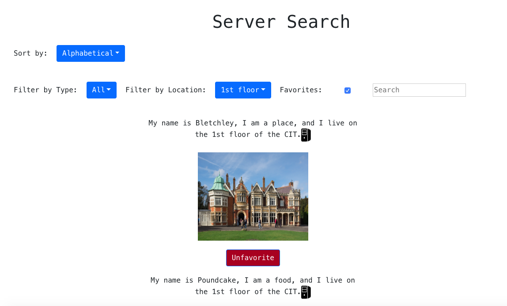
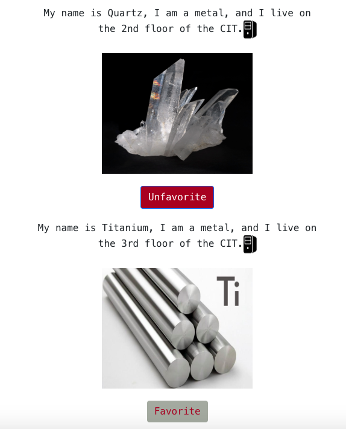

Server Search
View here (may take a few moments to load)

The Task
For a class project, a friend and I wanted to create a live-filtering web
page that would help students to locate their favorite servers at Brown's
Center for Information Technology (CIT). We included the option to sort
alphabetically and to filter by two criteria: floor and type of name (place,
character, metal, or food). Additionally, users can search the name of the
server, favorite servers, and render only their favorited servers.
Design Choices
Final Takeaways
 This project was a great opportunity for me to become familiar with React. I now have a better understanding of React syntax, and concepts like components and props. I am glad I got to understand a bit more about how to make dynamic web pages.